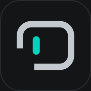

새 대화를 시작해 보세요
목록에서 왼쪽으로 밀어 보관할 수 있어요
연결
대화 · 선택 사항
생각
동기화
이 기기에서 Tailscale이 켜져 있고 로그인되어 있어야 서버에 연결할 수 있어요.

전체 화면으로, 앱처럼 빠르게 열 수 있어요
홈 화면 앱은 Safari와 저장소가 분리되지만, 서버에 저장된 대화는 그대로 보여요.
이 기기 데이터는 옮긴 뒤에도 7일 동안 보관돼요. 이 기기에만 보관